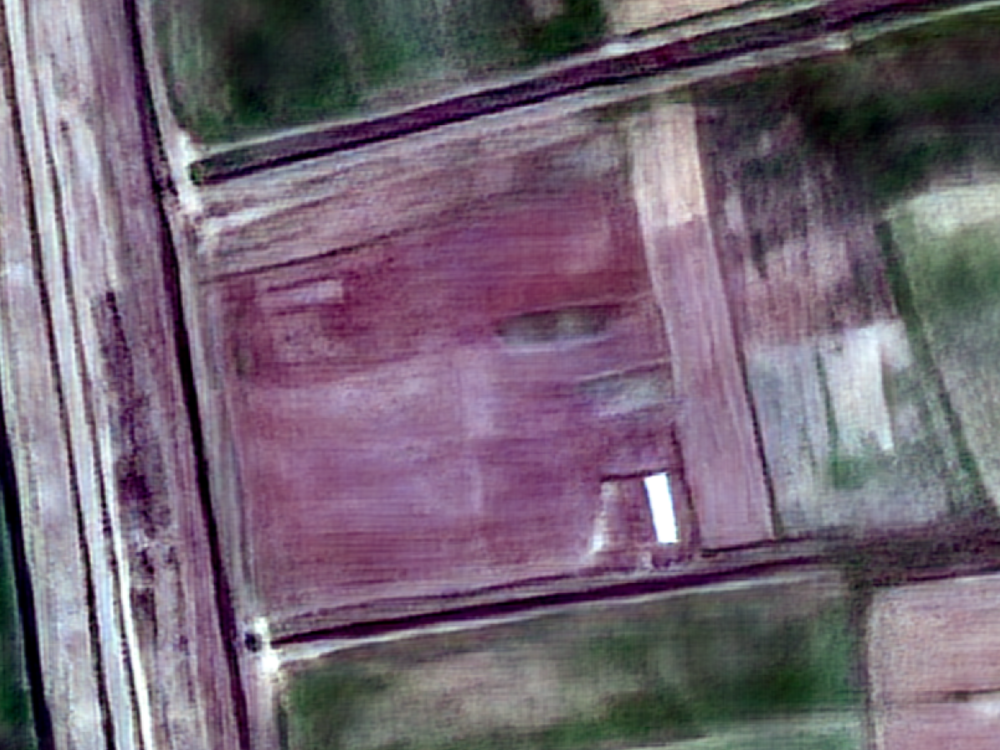
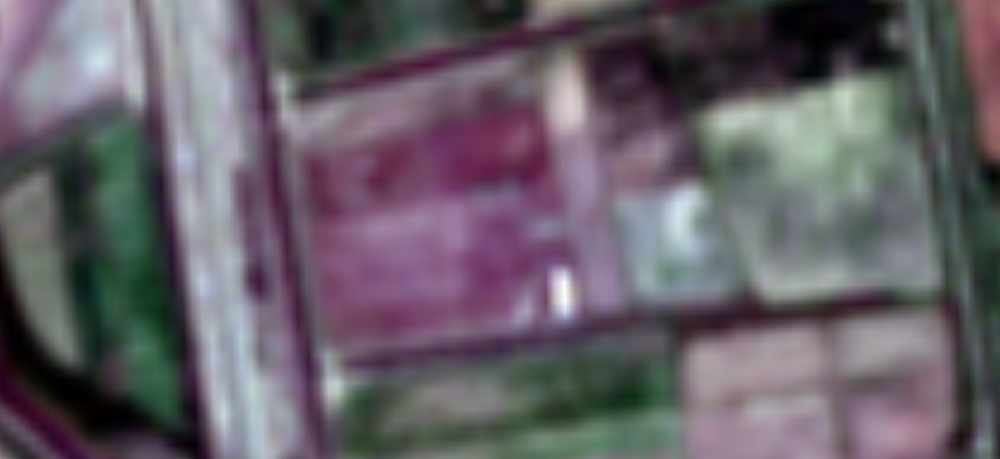
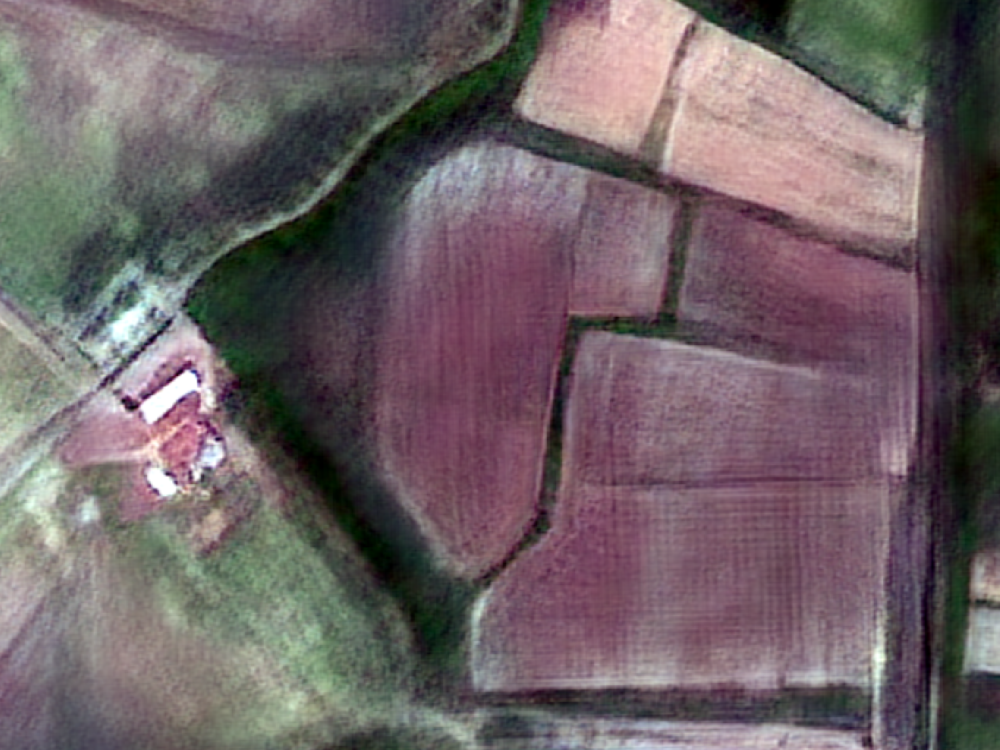
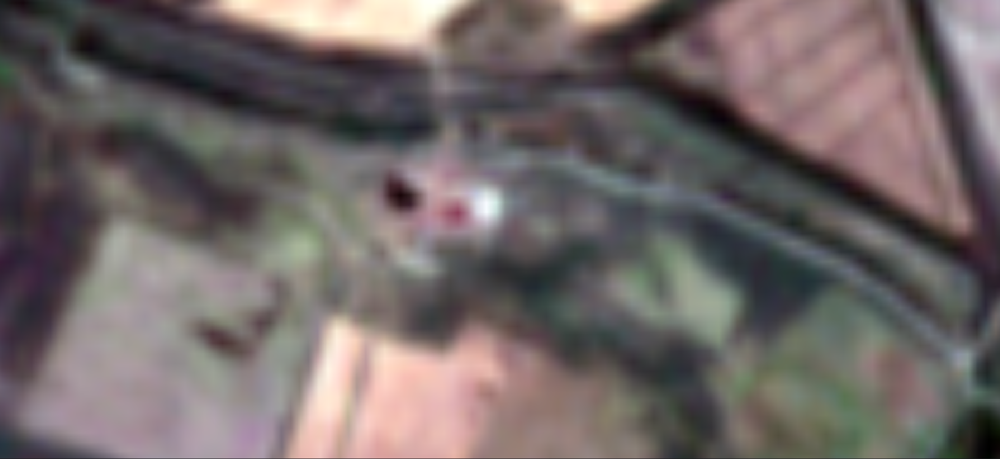
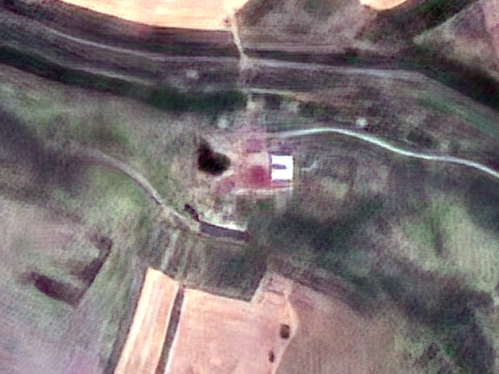
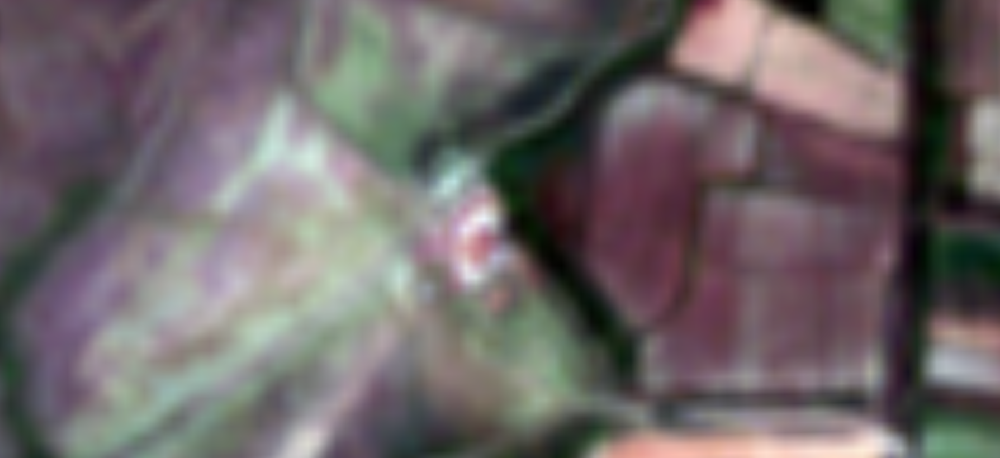
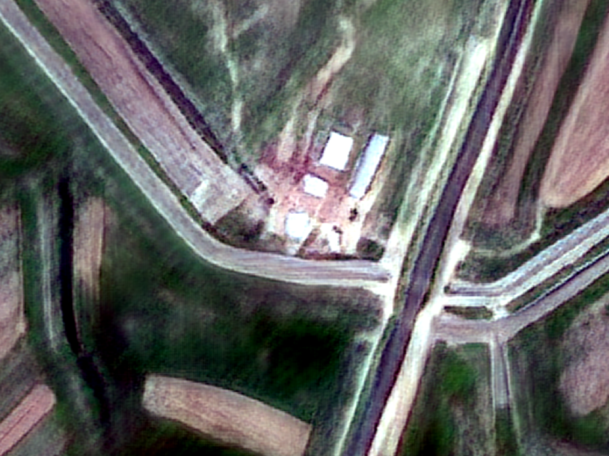
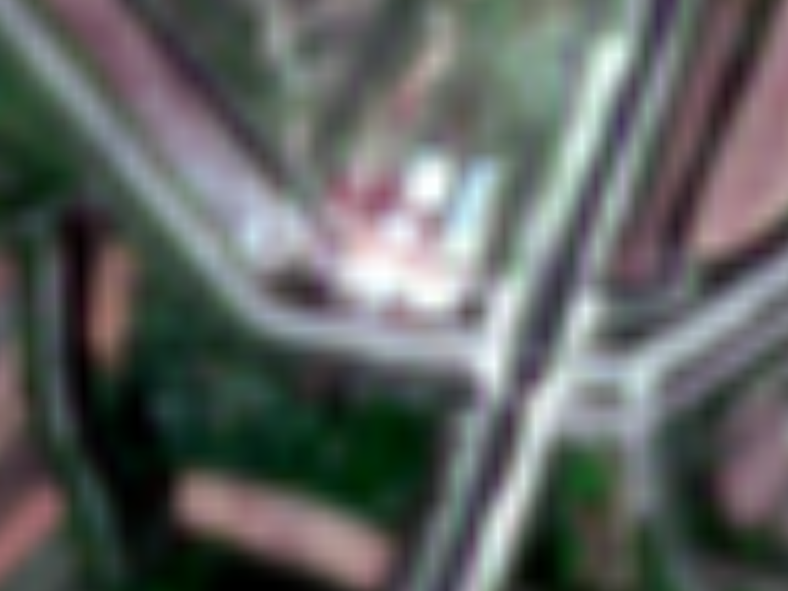
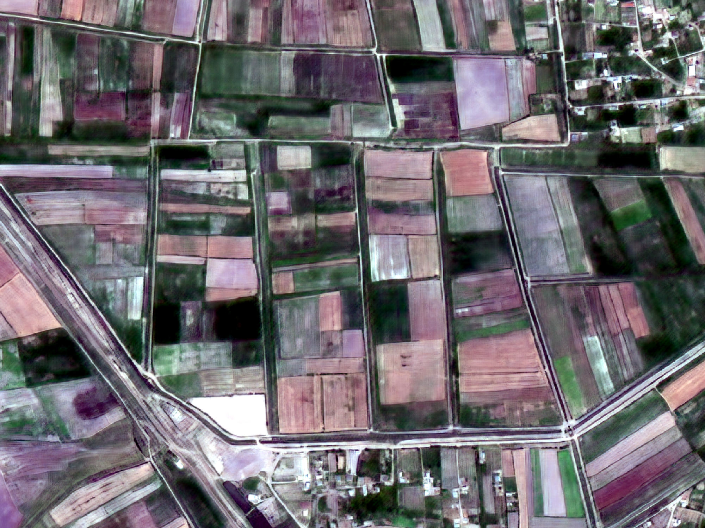
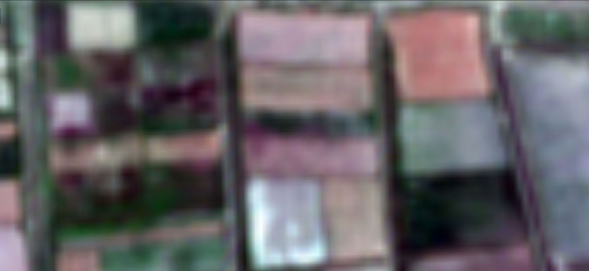

GeoSolver MMC – 1 metrlik yüksək ayırdetməli görüntü
Copernicus Sentinel-2 peyklərindən alınmış 10 metrlik görüntüləri süni intellektlə 1 metr piksel ölçüsünə qaldıran məhsul.
1 · GeoSolver 1 metrlik yüksək ayırdetməli görüntü məhsulu
GeoSolver 1 metr — Sentinel-2 peyklərinin 10 metrlik bandlarına tətbiq olunan süni intellekt əsaslı alqoritmdir.
Texniki əsas
Model dərin öyrənmə arxitekturasına əsaslanır.
Nəticədə hər bir 10 metrlik piksel 10×10 ölçülü 1 metrlik bloka çevrilir.
Nə dəyişir?
- Sərhədlər kəskinləşir.
- Qarışıq piksel problemi azalır.
- Xırda obyektlər görünür.
- Sahədaxili analiz mümkün olur.
- Vizual keyfiyyət yüksəlir.
Əsas üstünlüklər
Kommersiya keyfiyyəti
GeoSolver MMC peyk görüntülərinin ayırdetməsini 1 metrə qaldırır. Nəticə kommersiya səviyyəsində məhsuldur — kadastr, kənd təsərrüfatı və şəhərsalma layihələrində birbaşa istifadəyə hazırdır.
Arxiv və yenilənmə
Arxivimizə əsasən 2015-ci ildən bugünkü tarixə qədər istənilən dövr üçün 1 metrlik görüntü təqdim edə bilərik. Cari monitorinqdə isə ən azı 10 gündən bir yenilənmiş görüntü verilir — çox vaxt daha tez.
Müntəzəm yenilənmə
Azərbaycan ərazisi orta hesabla 5 gündən bir, bəzi zonalarda isə daha tez-tez görüntülənir. Bu tezlik dinamik proseslərin — əkin, suvarma, tikinti — izlənməsi üçün kifayətdir.
Vahid spektral əsas
Məhsul 10 banda qədər spektral məlumat saxlayır. Bu, NDVI, NDWI, təbii rəng, infraqırmızı kompozisiya və digər indekslərin 1 metrlik şəbəkədə hesablanması deməkdir.
Azərbaycan şəraitinə uyğun
Kiçik və orta təsərrüfatlar, xırda sahələr, mürəkkəb relyef — 1 metrlik dəqiqlik bu şəraitdə xüsusilə dəyərlidir. Sahə ölçüsündən asılı olmayaraq keyfiyyət eynidir.
Çevik çatdırılma
Məhsul GeoTIFF (CİS proqramları üçün), WMS (veb servis) və ya API vasitəsilə təqdim olunur. İstənilən formatda, istənilən ərazi üçün.
2 · Nümunələr — əvvəl və sonra
Aşağıdakı beş cütlük eyni ərazinin Sentinel-2 mənbə görüntüsünü və GeoSolver 1 metrlik nəticəsini göstərir. Bölücünü sürüşdürərək fərqi müqayisə edin.


Sentinel-2 · 10 m GeoSolver · 1 m

Sentinel-2 · 10 m GeoSolver · 1 m

Sentinel-2 · 10 m GeoSolver · 1 m

Sentinel-2 · 10 m GeoSolver · 1 m

Sentinel-2 · 10 m GeoSolver · 1 m3 · Tətbiq sahələri
1 metrlik dəqiqlik aşağıdakı sahələrdə xüsusilə dəyərlidir:
Kənd təsərrüfatı
- Sahə sərhədlərinin dəqiq çəkilməsi
- Məhsul növünün təsnifatı (taxıl, pambıq, qarğıdalı, üzüm)
- Sahədaxili zonallaşdırma (dəyişkən gübrələmə üçün)
- Biçin tarixinin və əkin sahəsinin təsdiqi
- Subsidiya və sığorta yoxlaması
Kadastr və torpaq uçotu
- Sahə konturlarının faktiki vəziyyətlə yoxlanması
- Yeni bölünmələrin və tikililərin qeydiyyatı
- Qeyri-qanuni istifadənin ilkin aşkarlanması
- Tarixi vəziyyətin bərpası (mübahisə halları üçün)
Şəhərsalma və infrastruktur
- Tikinti fəaliyyətinin monitorinqi
- Yol şəbəkəsinin yenilənməsi
- Yaşıllıq sahələrinin uçotu
- Şəhər genişlənməsinin illik ölçülməsi
Su təsərrüfatı
- Su anbarlarının səviyyə dinamikası
- Suvarma kanallarının vəziyyəti
- Çay yataqlarının dəyişməsi
- Daşqın zonalarının xəritələşdirilməsi
Ekologiya və meşə
- Meşə örtüyünün sahəsi və sərhədləri
- Qanunsuz qırma hallarının aşkarlanması
- Yanğın zərərinin qiymətləndirilməsi
- Otlaq deqradasiyasının izlənməsi
Fövqəladə hallar
- Daşqın və sürüşmə sahələrinin operativ xəritələşdirilməsi
- Zərərin sahə üzrə hesablanması
- Bərpa işlərinin izlənməsi
4 · Sentinel-2 — fon məlumatı
GeoSolver MMC-nin təqdim etdiyi 1 metrlik məhsulun mənbəyi Copernicus Sentinel-2 missiyasıdır. Aşağıda əsas texniki xarakteristikalar verilir.
| Parametr | Dəyər |
|---|---|
| Missiya | Copernicus Sentinel-2 (2A, 2B, 2C) |
| Peyklərin buraxılışı | 2A — 23 iyun 2015 · 2B — 7 mart 2017 · 2C — 5 sentyabr 2024 |
| Orbit hündürlüyü | 786 km |
| Zolağın eni | 290 km |
| Bir peykin təkrar çəkilişi | 10 gün (nominal) |
| Qrup halında təkrar çəkiliş | ~5 gün — Azərbaycanda zolaqların üst-üstə düşdüyü ərazilərdə daha tez-tez |
| Spektral bandlar | 13 (bunlardan B2 mavi, B3 yaşıl, B4 qırmızı, B8 NIR — 10 m) |
| Radiometrik dərinlik | 12 bit (4096 səviyyə) |
| Arxivin başlanğıcı | 2015 (müntəzəm çəkilişlər 2016-cı ilin əvvəlindən, 5 günlük tsikl 2017-dən) |
| Lisenziya | Copernicus açıq məlumat siyasəti |
Qeyd: 21 yanvar 2025-ci ildə əməliyyat konstelyasiyasında Sentinel-2A-nı Sentinel-2C əvəz etmişdir; Sentinel-2A isə uzadılmış kampaniya çərçivəsində 2026-cı ilin sonuna qədər əlavə çəkilişlər aparır. Məhsul üçün hər üç peykin məlumatı istifadə olunur, ona görə də tarix seçimində məhdudiyyət yoxdur.
5 · Spektral indekslər — 1 metrlik dəqiqlikdə
1 metrlik məhsul spektral bandları tam saxladığı üçün bu bandlara əsaslanan bütün indekslər birbaşa 1 metrlik şəbəkədə hesablana bilər. Çoxspektrli (MS) çıxışda indekslərin çeşidi daha da genişlənir.
| İndeks | Düstur | Təyinat |
|---|---|---|
| NDVI | (B8−B4)/(B8+B4) | Bitki sıxlığı, məhsul monitorinqi |
| NDWI | (B3−B8)/(B3+B8) | Su hövzələri, daşqın |
| GNDVI | (B8−B3)/(B8+B3) | Bitki xlorofil məzmunu, azot statusu |
| SAVI | 1.5·(B8−B4)/(B8+B4+0.5) | Seyrək bitkidə torpaq fonunun təsirini azaldır |
| EVI | 2.5·(B8−B4)/(B8+6·B4−7.5·B2+1) | Sıx bitkidə doyma problemi olmadan |
6 · Texniki çərçivə və məhdudiyyətlər
Məhsuldan düzgün istifadə üçün onun imkanlarını və məhdudiyyətlərini bilmək lazımdır.
Obyekt ölçüsü həddi
Mənbə görüntüdə heç bir izi olmayan obyekt bərpa oluna bilməz. 2 metrdən kiçik tək obyektlər (dar cığır, tək ağac, kiçik tikili) etibarlı görünmür. 3–5 metr və daha böyük obyektlər aydın seçilir.
Mənbə keyfiyyətindən asılılıq
Bulud, duman, kölgə mənbə görüntünün keyfiyyətini azaldır. GeoSolver yalnız buludsuz səhnələri emal edir. Tələb olunan tarixdə buludluluq varsa, alternativ yaxın tarix təklif olunur.
Dəqiqlik səviyyəsi
Məhsul zona və sahə səviyyəsində analiz üçün etibarlıdır. Tək piksel dəyəri qiymətləndirmə xarakteri daşıyır. Mülkiyyət mübahisələrində ilkin göstəricidir, yekun qərar üçün yer ölçmələri tələb olunur.
Dəyişiklik analizində həssaslıq
Aşkarlama həddi mənbə pikselinin ölçüsü ilə məhdudlaşır: təxminən 100 m² (bir Sentinel-2 pikseli) və daha böyük dəyişikliklər etibarlı aşkarlanır. Kontrastı yüksək dəyişikliklər (məsələn, torpaq üzərində yeni beton örtük) bəzən ~25–50 m² səviyyəsində də görünür, lakin bu, hər səhnədə təmin olunmur.
7 · Kommersiya peykləri ilə müqayisə
Aşağıdakı cədvəl GeoSolver 1 metrlik məhsulunu ənənəvi yüksək ayırdetməli kommersiya peyk görüntüləri ilə müqayisə edir.
8 · İş axını və çatdırılma
Sifariş prosesi
- Ərazi müəyyən edilir — maraq zonası (rayon, təsərrüfat, ya xəritədə çəkilmiş kontur)
- Tarix və ya dövr seçilir — tək tarix, mövsüm, ya ardıcıl illər
- Buludsuz səhnələr seçilir — uyğun Sentinel-2 görüntüləri tapılır
- Superrezolyusiya emalı aparılır — çıxış 1 metrlik spektral məlumat (4–10 band)
- İstəyə görə indekslər hesablanır — NDVI, NDWI, EVI və s.
- Məhsul çatdırılır — istəyə uyğun formatda
Çatdırılma formatları
| Format | Təsvir | İstifadə |
|---|---|---|
| GeoTIFF | Tam spektral məlumat, koordinat sistemi ilə | QGIS, ArcGIS, Python, ENVI |
| WMS / WMTS | Veb xəritə servisi | Brauzer, xəritə tətbiqləri |
| API (Cloud Optimized GeoTIFF) | Birbaşa bulud oxuması | Proqram təminatı ilə inteqrasiya |
| Rəngli təsvir (PNG, JPEG) | Təbii rəng / infraqırmızı | Hesabat, təqdimat, çap |
| İndeks xəritələri | NDVI, NDWI və s. rəngli xəritə | Sahə analizi, qərar dəstəyi |
9 · Qiymətləndirmə və tariflər
Üç əsas sifariş modeli təklif olunur. Hər biri fərqli istifadə ssenarisinə uyğunlaşdırılıb.
- Seçilmiş tarix üzrə 1 m superrezolyusiya görüntüsü
- Sifarişə uyğun band dəsti — 4-dən 10 banda qədər
- GeoTIFF və ya PNG formatında çatdırılma
- Hər hektar / km² üzrə əlverişli hesablaşma
- Müəyyən dövr ərzində bütün buludsuz keçidlər
- 1 m spektral indekslərin (NDVI, NDWI və s.) avtomatik hesabı
- WMS / WMTS xəritə servisi inteqrasiyası
- Dəyişikliklərin dinamik analizi
- Yüksək həcmli emal imkanı
- Cloud Optimized GeoTIFF (COG) və API çıxışı
- Arxiv məlumatlarının kütləvi çevrilməsi (2015-dən bəri)
- Fərdi inteqrasiya dəstəyi və zəmanətli SLA
10 · Tez-tez verilən suallar
Sifariş etdikdən sonra məhsul nə qədər vaxta təhvil verilir?
Standart ərazilər üçün emal və çatdırılma 24 saat ərzində həyata keçirilir. Böyük həcmli arxiv sifarişləri üçün müddət fərdi razılaşdırılır.
Minimum sifariş sahəsi məhdudiyyəti varmı?
Xeyr, GeoSolver 1 m məhsulu üçün heç bir minimum sahə məhdudiyyəti yoxdur. Kiçik kənd təsərrüfatı tarlalarından tutmuş bütöv rayon miqyasınadək sifariş verə bilərsiniz.
Ərazidə buludluluq olduqda proses necə tənzimlənir?
Süni intellekt modeli yalnız tam buludsuz və ya minimum buludlu Sentinel-2 görüntülərini emal edir. Seçilmiş tarixdə bulud olarsa, sizə ən yaxın alternativ buludsuz tarix təklif olunur.
Məhsulu öz CİS proqramımda (ArcGIS, QGIS) istifadə edə bilərəmmi?
Bəli, təqdim olunan GeoTIFF faylları tam georeferensiyalıdır (koordinat bağlıdır) və bütün müasir CİS proqramları ilə tam uyğundur.
11 · Əlaqə
Maraqlanan sahəni, istədiyiniz tarixi və çatdırılma formatını bizə bildirin. Biz sizə uyğun təklif və nümunə məhsul təqdim edəcəyik.
geosolver.az